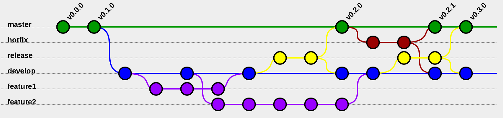

Level Up: Git

Created by Jessica Bell / @SirJessTheBrave
Agenda
- Who Am I?
- Who are you?
- A Team of One
- Working in Teams
- GIT... Oh Shit!
- Make your first page with GitHub
- QA Time
Who Am I?
- Jessica Bell
- Web Developer at Deloitte Digital
- Self taught: Degree in International Relations, General Assembly Bootcamp for Front End Web Development
- Community Leadership: DC FemTech, DC Tech Meetup
- GitHub: SirJessTheBrave
- Twitter: @sirJessTheBrave
Spirit Animal

Who Are You?
- Name
- Occupation/grade/thing that occupies most of your time
- Why you are hear and what you want to learn
- What is your Spirit Animal/persona/thing you love
Lets Go!

Team of One

Best Practices
- Commits should be small and frequent
- Use 'Diff' to check changes
- Keep commit messages semantic
- Branch!!
- Always push at the end of the day!
Working in Teams
Git Team Workflows
- Stick to one process/workflow
- Enforce Standards
- Integrate build processes/development cycles into your git workflow
- Reference Guide
Feature Branch workflow
Rebase vs Merge
Merge: Takes the Master branch, and merges the code into the feature branch like normal, a non-desctructive operation but can pollute the feature branch if master is very active
Rebase: Move entire feature branch to tip of master - which re-writes the project history.
Reference
{kind=link}
Git.... Oh Shit!
What Next
- Don't panic! This is why we are using git!
- If you get stuck - use a GUI to visualize! (I reccomend SourceTree)
Reset
Revert
Stashing
Running 'git stash' will take your current changes, packacge them up with a date and ID and store them for later use - taking them out of your current repo/project. When you are ready to call them up again run 'git stash list' to see your stashed items. Use 'git stash apply' to apply the stashed files.
Hosting your first page with GitHub

Getting Started
- Create a free GitHub Account
- Create your first Repository on GitHub
- "Clone" your new repository onto your local machine
- CODE!!
- Using either your command line or a GitHub GUI (SourceTree is my reccomended one) "Push" your code to your online GitHub Account
- Create a "Branch" and name is gh-pages on GitHub
- Look in your repository settings to find the URL of your newly published site!
- Profit!
Stop! Question-time!
Fin
@sirJessTheBrave | GitHub: SirJessTheBrave